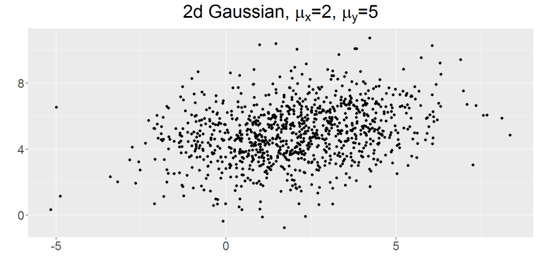
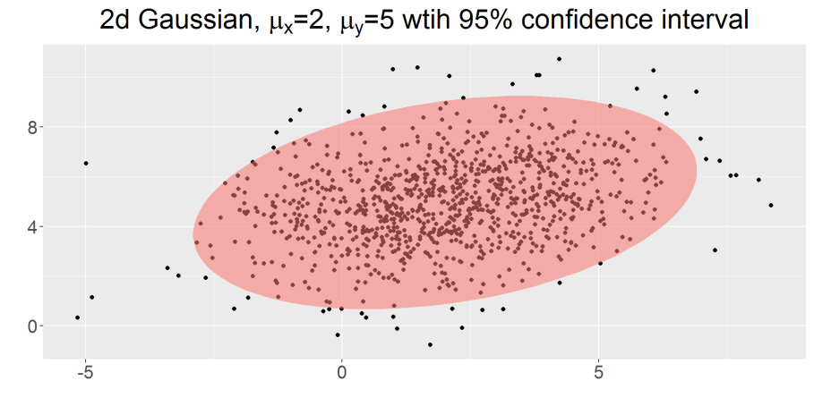
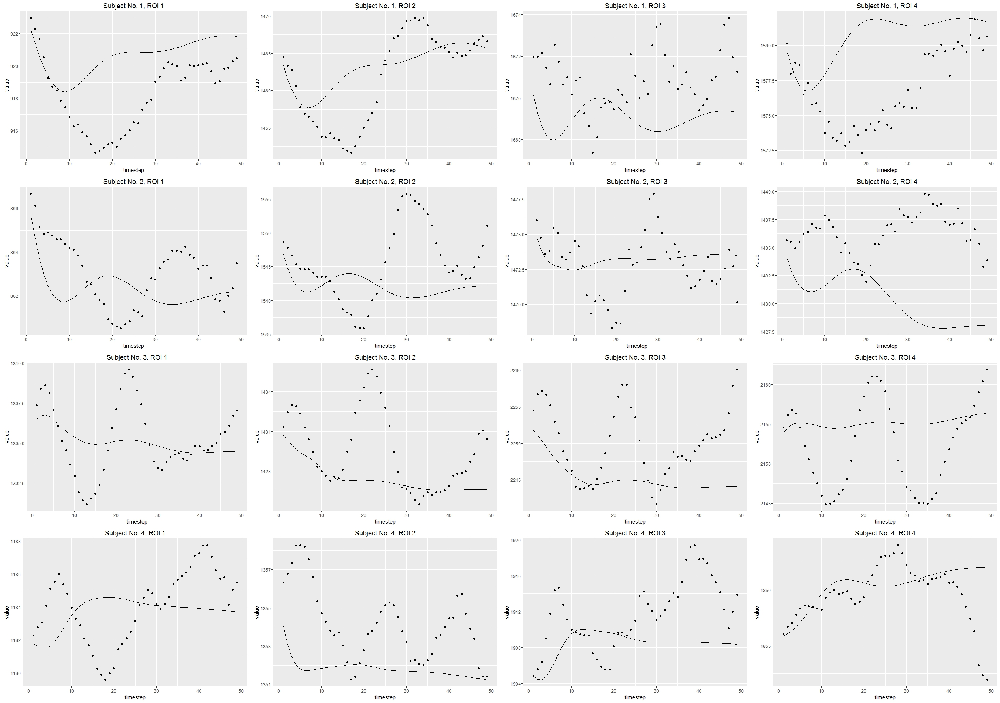
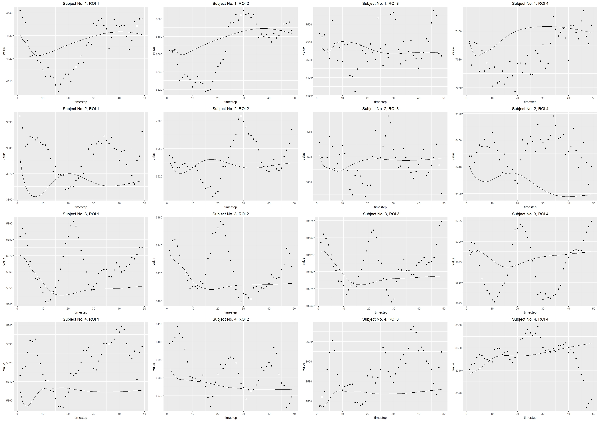
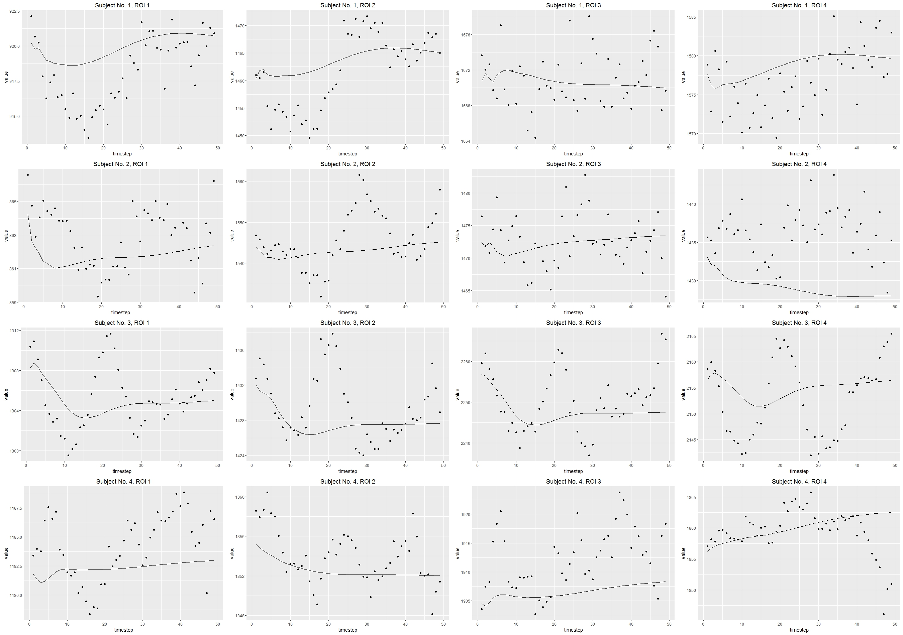
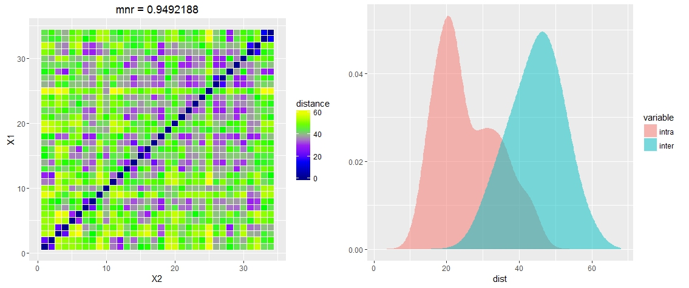
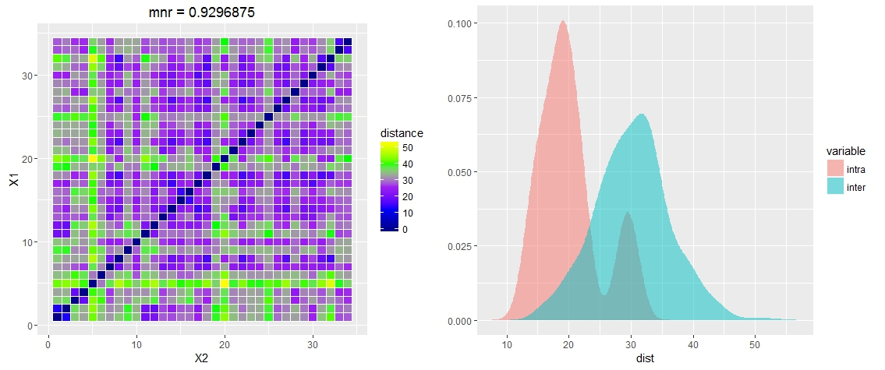
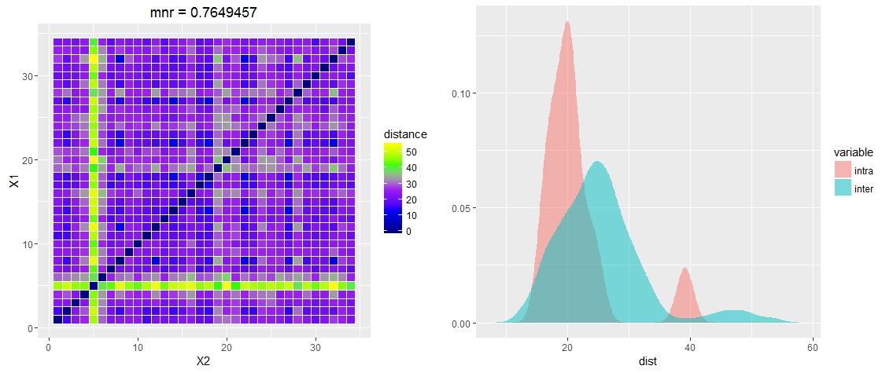
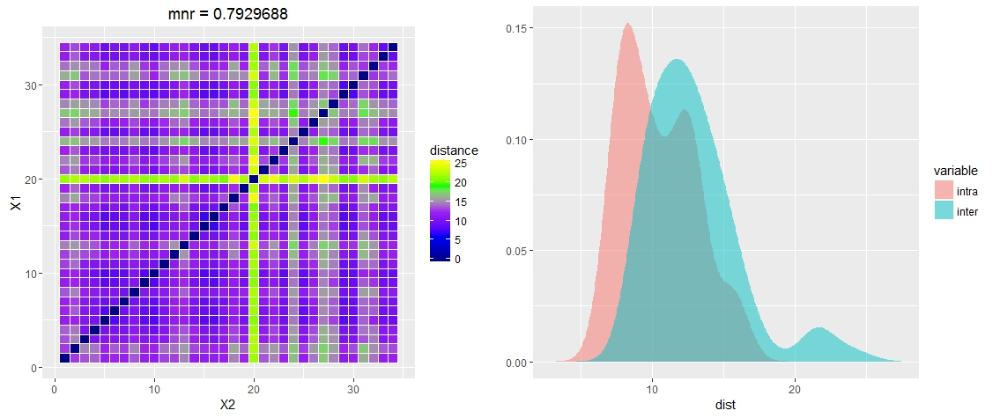
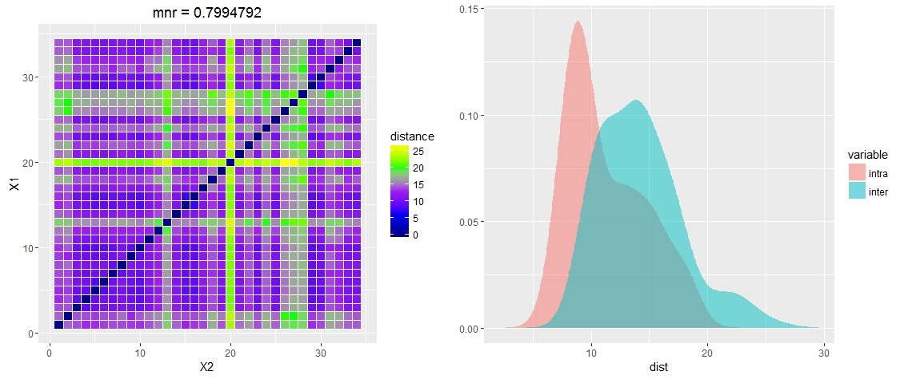

Design Team 0 Slides
Eric Bridgeford, Albert Lee, Eric Walker
FNGS pipeline leg overview
Eric Bridgeford
Week's Accomplishments
- Merged ndmg-master into ndmg-eric-dev
- Multivariate Normal Exploration
- Added linear and quadratic drift removal to pipeline
- Created R style guide (if you use R, check this out before writing anything, it's pretty brief)
- Built awesome QSub utility for easy cmd line BC1 job submission
Results for Pipeline
- Note: first version of pipeline implementing both linear and quadratic drift removal
- Also: removed kalman filtering until we know we have the parameters estimated properly
NKI, desikan atlas

NKI, Talairach 2mm

Comments
- Pipeline looks very good, time to run on more data
- There isn't really much left to add
QSub Issues
- Ran into issue where I wanted to use BC1, but couldn't effectively submit 1000 jobs without LONI
- Will advised that it would be awesome to have a command line tool to do it for us
- Created qsub utility for braincloud qsub repo
- Notes: works well, but memory requesting is off still (need to update)
Multivariate Gaussian Exploration
- PDF version
- Have some k-dimensional multivariate distribution with mean $\mu$ and cov $\Sigma$
$$ f(x \vert \mu, \Sigma) = \frac{1}{{2\pi}^{\frac{p}{2}}|\Sigma|^{\frac{1}{2}}}exp\Bigg (-\frac{1}{2}(x - \mu)^T\Sigma^{-1}(x - \mu)\Bigg )$$
- Follows that we have the log-likelihood function:
$$l(x) = K + N ln(|\Sigma|) + \sum_{i=1}^{N}(x_i - \mu)^T\Sigma^{-1}(x_i - \mu)$$
- Estimator of mean: $\hat{\mu}= \frac{1}{N}\sum_{i=1}^Nx_i$
- Estimator of Covariance: $\hat{\Sigma} = \frac{1}{N}\sum_{i=1}^N(x_i-\mu)(x_i-\mu)^T$
Experiment
- Draw a population of 1000 items with $\mu = [2, 5]$ and $\Sigma = [4, 1; 1, 3]$

- Use MLE formula derived above, receive estimators
- $\hat{\mu} = [2.004098, 4.965075]$
- $\hat{\Sigma} = [4.026957, 1.057485; 1.057485, 3.077138]$
- Plot our confidence interval for the estimated gaussian

Things to do this week
- make fMRI graph variance repo
- do gaussian mixture experiments (?)
- run pipeline on lots of data and make spreadsheet of results
- Meet with greg for merging eric-dev to master
- Start studying for GREs
Autoregression on Timeseries
Eric Walker
Default parameters

dlm(FF=1, GG=1, V=0.8, W=0.1, m0=0, C0=1e7)
R^2 = -7.56
MLE

dlm(FF=0.3039547, GG=2.7184272, V=2.6155451, W=0.7186114, m0=0.4027390, C0=0.6656987)
R^2 = -3.75
Best R^2

dlm(FF=1, GG=1, V=0.8, W=300, m0=0, C0=1e7)
R^2 = -2.50
AR(0) KF default

dlm(FF=1, GG=1, V=0.8, W=0.1, m0=0, C0=1e7)
AR(0) MLE

dlm(FF=0.3039547, GG=2.7184272, V=2.6155451, W=0.7186114, m0=0.4027390, C0=0.6656987)
AR(0) best R^2

dlm(FF=1, GG=1, V=0.8, W=300, m0=0, C0=1e7)
AR(1) KF default

dlm(FF=1, GG=1, V=0.8, W=0.1, m0=0, C0=1e7)
AR(1) MLE
dlm(FF=0.3039547, GG=2.7184272, V=2.6155451, W=0.7186114, m0=0.4027390, C0=0.6656987)
AR(1) best R^2

dlm(FF=1, GG=1, V=0.8, W=300, m0=0, C0=1e7)
Thoughts
- Need better prediction model
- Default KF params smoothed the most visually
- Better R^2 value only caused by scattered points
Javascript Image Analysis
Albert Lee
Accomplished this week
- Developed code to test histogram equalization of slice by slice (useless as I'll explain later)
- Developed new sampling method that doesn't require the Clarity API
- Developed Code to sum the histograms of a 3D cube based off of Alex's code
- Tested different subsamples and subsampling methods
- Tested IBM Watson visualization
- Created NeuroCV github repo
Iterative Histograms
- Last week I found the histogram equalization of each slice and combined the slices
- This is improper technique as we are trying to find the histogram equalization of the whole volume not separate slices
- Iterative histograms is a different technique where you find the array dimensions and iteratively add the histograms accross the x y z axis
Challenges
- Iterative histograms are even more GPU intensive than slice by slice equalization
- Wasted a lot of time trying to downsample data to run the code on my 3GB laptop
- Clarity API and other packages difficult to install on linux
- A deeply subsampled (9, 6, 11) cube took several hours to process with Cortex's 18GB RAM
Challenges part 2
- After sampling an memap is created - this means nibabel is rendered useless for manipulations and I cannot convert back to .nii
- Due to my lack of understanding of interpolation my code might be deeply flawed
- Tried some manipulations with the Clarity API specifically with trying to turn the sampled array from into a nibabel friendly form however because nifti format is rather finicky when converting from array to nifti (at least with nibabel)
- In process of investigating alternative python based nifti image manipulation suites
Sampling Methods
- Random sampling with number generator (unreliable and ultimately uninformative)
- Proportional representation based on bin numbers (Difficult to implement in practice)
- Interpolation based estimation (Best method)
- Important consideration - Level 5 downsampling represents the greatest downsampled data available on the Neurodata server, additional downsamples are thus inherently unreliable
Interpolation based estimation
- Interpolation is the art of constructing new data points within a discrete range
- A very crude definition is "curve fitting" based on simple functions
- Similar to regression there is linear, exponential, etc.
- Experimented around however due to the lack of availability of a "check" model, I just chose to go with linear interpolation because it's the fastest
Interpolation based estimations pt 2
- What is the difference between sampling using interpolation of the zoom of an N size matrix and a simple downcale of the local mean
- Does higher order interpolation matter for our case
Logic of iterated histograms
- Take cube of data
- Find the dimensions thus creating your range parameters
- Sample using linear interpolation
- Over the sampled dimensions find the non zero points and iteratively add the histograms
- Construct the iterated histogram
- Normalize using basic histogram normalization
Issues still in the progress
- My method of converting back to a form involves creating an array of zeros based on the histogram of the data
- Next I use 32 as the bin size and divide each cell of the histogram by the hist_sum value
- I save the result as a csv file - however since I converted the 3D array into what is essentially a 2D representation of the histogram how do I convert back to either a 3D form
Steps taken to solve these problems
- Contacted the major clusters on campus - IDIES, MARCC, HPCC and asked if I could use a node of their cluster for free - No
- Constructed a small 3D array and tried the manipulations I was using - currently using results to help me debug
- Concern: Even a 2x2x2 (smallest reasonable volume) requires several hours to process
- Write it in C code? - probably not best use
NeuroCV Repo
- Stored Histogram equalization notes and all the various histogram equalization methods I've tested
- A lot of code is not included because it requires nifti raw data files which Github does not provide space for - I'll create pointers using Git lfs, but my cortex account has all the necessary files as well
- Jupyter notebook is partially filled out, but I need to figure out how to outsource the code - is there a nohup command for jupyter notebook? (To avoid hogging cortex for 12+ hours)
Next week
- Find way to prove my histogram equalization works - Problem: There are no 3D examples of histogram equalization on the web so difficult to prove
- Find way to improve processing time
- Ask Jovo for more stuff